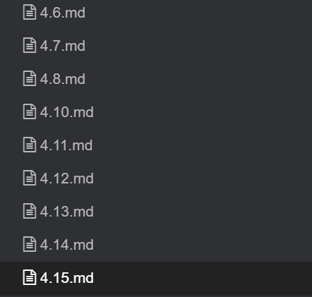

流水账。
前些日子一直摸鱼，过得太悠闲了，数据库，go，rust 入门阶段里东看看西瞅瞅，毕设只在工作日里花一两个小时，游戏倒是每天都上去看几眼稍微玩一玩，也不是很有激情，日子过得悠闲舒适。
某天不知怎么突然感觉到快毕业了，就想着抓紧做完毕设，写完论文，提前迎接美好暑假，想是应该会和高三暑假一样快乐，六月开始放假，九月左右开始上学。也许随着年龄增长，承担的责任越来越多，相应的单纯的快乐会减少一些。不过与此同时，成长也带来了更细腻深刻的感受力。尽管我对很多事物持悲观怀疑的态度，但我依旧期待这个暑假的到来。
日子还是要有盼头的，怀着期待暑假的心情，这几天花了很大的精力做毕设。差不多连续做了十天左右了，基本的主要逻辑功能都差不多了，只不过都很零散，还剩下前端页面的美化展示以及整合，以及一些小功能、错误处理工作没做。

大学四年没写过什么应用类的代码，基本都在写偏系统的代码，前端一窍不通，偶尔写过几行 python。这次毕设做的是临床医学术语编码映射管理的内容，带我的学长建议用 django 框架开发。python + django 上手写出东西来不是很难，前端方面花的时间最多，但大多都是在零零散散地搜某个效果，某个功能怎么实现，以及找前端的 bug，很是痛苦，有点后悔前期没下定决心认真的把一些基础知识过一遍。还是有点强迫症，导师要求 4 月底交论文初稿，想早点写完代码，再一口气写完论文，于是乎，为了赶进度，一切目标都是——功能有就行，先跑起来再说。毕设代码自然写得很烂，虽然脑子里一直有重构的想法，甚至有重构的思路，但还是觉得工作量太大了🤣，重构过程如果遇到比较复杂的困难时间就非常紧了。在某次求助 hys 排查前端的 bug 后， 他说“你要是用 go 写后端 + 用 vue 写前端，这不早就搞定了”。😂想着以后也许不会重构，但会直接重写项目了。
在做的过程中，导师又丢给我几批新数据，pdf, word 格式，很是头疼，word 里面各种奇怪的字符，规律虽然有，但是特别难处理，pdf 更不用说了，本来就具备一点保密性质的功能。导师还要求非用上这批数据不可。前天刚好找到个网站里有那批数据，只能爬他的数据了。昨天下午开完组会，晚上去图书馆写爬虫代码，爬了九百多条数据账户被强制下线，回到寝室看了会娱乐视频又开始干活，用各种伪装，几十个 ip，好几个账号，sleep，随机爬数据，没想到网站也是十分刁钻，反爬虫的手段是某段时间内只对外响应 1000 次左右的的请求，超过这个限制，相当长一段时间（具体多久不清楚）直接拒绝为任何用户服务，给我整无语了。昨天整了一个通宵也没搞定，不过今天下午退而求其次，舍弃了几个重要信息的字段，减少了请求次数，最终还是搞到了数据，不是很完善就是了。
毕设任务还是挺重的🤣，前期摸鱼太久了，最近还得继续多花点时间在毕设上，刚好学一学前端基础，有个大概的认识，如果没人逼我，估计前端，django，爬虫，python 这些我都不会主动去学习了解，涨涨姿势也还不错。
时间飞逝，马上就到了感慨的时节了。